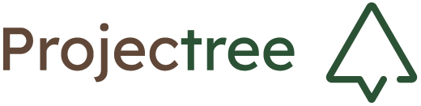

Oslandia
Oslandia
Oslandia is a French company specialized in open source GIS solutions. They provide expertise in QGIS, PostGIS, and QField for data collection workflows with comprehensive training and implementation services.
 Astun Technology
Astun Technology
Meet our partner – one of the most recognizable companies creating, utilizing, and supporting open-source GIS technologies in the UK.
 Kartoza
Kartoza
Based in South Africa and Portugal, Kartoza helps organizations harness open source geospatial tech through expert support and services.

ProjectreeEngineering, environmental, and surveying consultancy. Specialists in environmental licensing and GIS solutions for the Brazilian market.
About QField
QField is the leading professional fieldwork app used in enterprise settings for efficient geospatial data collection and management. As a Digital Public Good, QField not only excels in enterprise and professional applications but also contributes significantly to advancing at least six of the United Nations Sustainable Development Goals (SDGs), promoting a more sustainable and equitable future.
Stay in the loop
Subscribe to our newsletter and stay up to date on the latest and greatest!
Open-source
QField is released under the GNU Public License (GPL) Version 2 or above. Developing QField under this license means that you can inspect and modify the source code and guarantees that you will always have access to a QGIS based field data collection app that is free of cost and can be freely modified.
Privacy
View the QField Privacy Policy to learn what information is collected, used and how we protect this.
Credits
QField, QFieldCloud and QFieldSync are developped by OPENGIS.ch. OPENGIS.ch offers consulting, development, training and support for open-source software including QField, QGIS and PostGIS.
Oslandia
Location: 🇫🇷 France
Services:
- QField implementation and workflow setup
- Custom development and integration
- Training and workshop services
- Technical support and maintenance
Expertise: Oslandia specializes in open-source GIS solutions, with particular focus on QGIS, PostGIS, and 3D/web mapping. They offer comprehensive QField implementation services including data structure design, form creation, and field workflow optimization.
Astun Technology
Location: 🇬🇧 United Kingdom
Services:
- QField implementation and training
- Enterprise GIS solutions
- Data collection workflow design
- Technical support and consulting
Expertise: Astun Technology is one of the UK's leading providers of open source geospatial solutions. Their team offers expertise in QGIS, cloud hosting, and mobile data collection workflows, making them an ideal partner for organizations looking to implement QField in enterprise settings.
Kartoza
Location: 🇵🇹 Portugal | 🇿🇦 South Africa
Services:
- Geospatial consulting
- Web development
- Mobile GIS support
- QGIS plugins
- Open Source geospatial training
Expertise: Kartoza's vision is to enable a world where spatial decision making tools are universal, accessible and affordable for everyone for the benefit of the planet and the people that inhabit it. We would love to partner with you for training, development and maintenance of open source GIS systems.
 TEST (Pty) Ltd
TEST (Pty) Ltd
Location: 🇿🇦 South Africa
Services:
- QField implementation for African markets
- Local support and training
- Custom development services
- Consulting for conservation and resource management
Expertise: TEST is a South African-based company specializing in free and open-source GIS solutions. With deep experience in the African context, they provide tailored QField implementations for conservation, agriculture, and urban planning projects throughout the region.